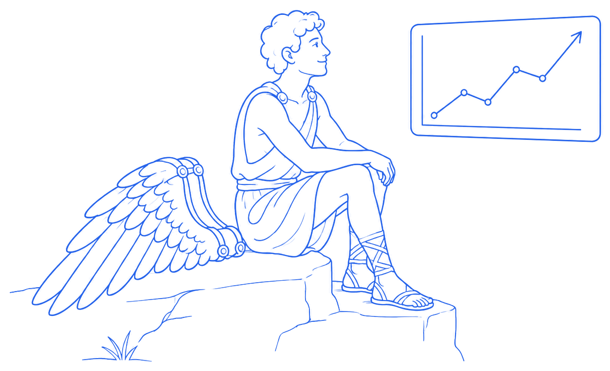

Ask a trader what "overtrading" means and you'll usually get the same answer: too many trades. Clicking in and out of the market all day, chasing every setup, ending the session with a ticket count you can't fully justify. That one's real, and worth fixing. There's a second kind, though, and it's the one that actually ends careers.
It has nothing to do with how often you trade. It's about how big.
The myth
Daedalus built two pairs of wings, wax and feathers, so he and his son Icarus could escape Crete by air. He gave Icarus one instruction that mattered more than any other: fly the middle course. Too low, and the sea's damp would weigh the feathers down. Too high, and the sun would melt the wax.
Icarus didn't ignore the warning out of carelessness. He ignored it because, for a while, it kept working. Every bit higher brought a better view and a stronger sense that he could handle it. By the time the wax gave way, he was already too high to recover. What actually took him down wasn't one bad call — it was a string of decisions that each felt fine on its own, each one nudging the ceiling up a little more, until there was no altitude left to fail safely from.

What that looks like in a trading account
You've seen this trader, or you've been him. Three or four wins in a row, and the size starts creeping — nothing dramatic at first, just a bit bigger each time, because the recent trades "proved" the setup and the conviction feels earned. Every individual size-up looks reasonable. Nobody plans to blow up an account. They just keep climbing while climbing keeps paying off.
Then one trade goes the other way at the new size, and the damage isn't limited to that trade. It wipes out the last two weeks too. Being wrong was never the real threat here. Being wrong at that altitude was.
Being wrong isn't what melts the wax. Being wrong at the wrong size is.
Why it's invisible from inside the flight
Same problem as the first kind of overtrading: nothing about it shows up on a single ticket. A position three times your normal size just looks, in the moment, like a trade you happen to feel great about. What's missing is the comparison against your own baseline — how this size stacks up against what you've been running lately, and whether the conviction behind it is real or just three green trades talking.
You only see that comparison after the fact, once there's enough data to show the shape of it.
Where CoTrader steps in
CoTrader's Callouts are built to flag exactly this: size drifting upward relative to your own recent average, especially right after a winning streak. The trigger isn't a trade that "felt big." It's your own synced data showing the altitude climbing.
The Weekly Review backs that up from another angle, putting risk-adjusted results next to raw P&L so a green week built on oversized swings reads as a warning rather than a win. Every trade is tagged and journaled automatically too, so you can go back later and see the exact moment size started creeping, and what it cost the next time that trade turned.
Landing instead of falling
Flying low and staying small forever was never the lesson here. Daedalus wore the same wings and made it across the sea. What got him there was knowing exactly where his ceiling sat, and staying under it on purpose.
That's the version of Icarus worth aiming for: wings folded beside him, sized to what the setup earned, watching the market with the kind of calm that only comes from knowing precisely how much altitude is safe. Trading like that, day after day, beats one spectacular afternoon.